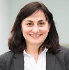

Welcome to The School of Computing and Digital Media
The School has an excellent reputation for its innovative and practical approaches to teaching and learning. For generations it has produced qualified professionals across a broad spectrum of technical careers with graduates in high profile, international roles. Our applied approach to the subject ensures our graduate employment rate remains one of the best in the UK. We have recently been recognised as the best new university in the UK for computing (Times Good University Guide 2009 and 2010). Our courses are recognised by the BCS – the Chartered Institute for IT.
Strong links with industry ensure that courses are constantly updated plus many are introduced as a direct response to changes in the marketplace. Our world-class research is often in direct collaboration with industry, including major oil, pharmaceutical, and software companies.
We offer a range of career enhancing short IT courses. View the courses and book online.